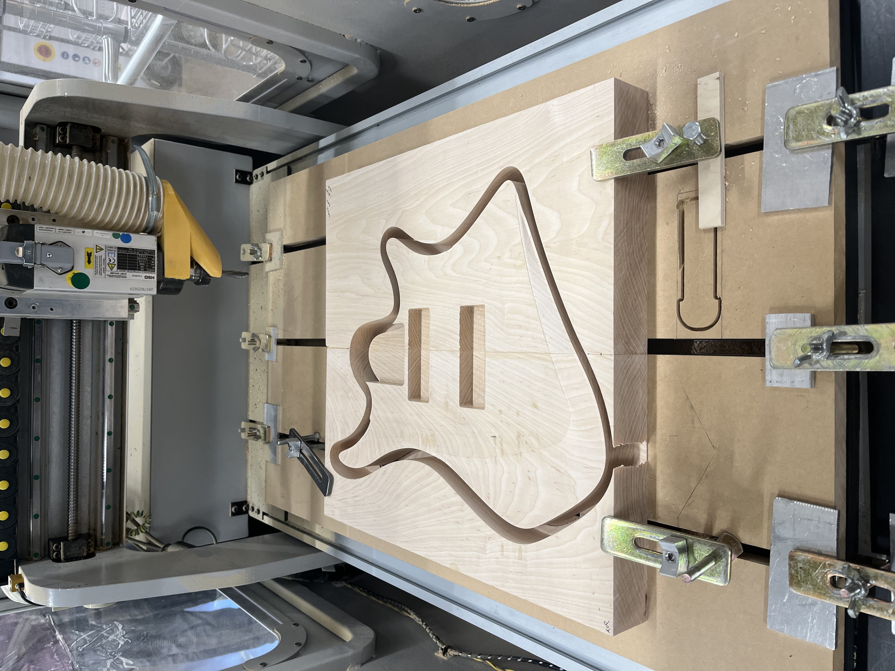
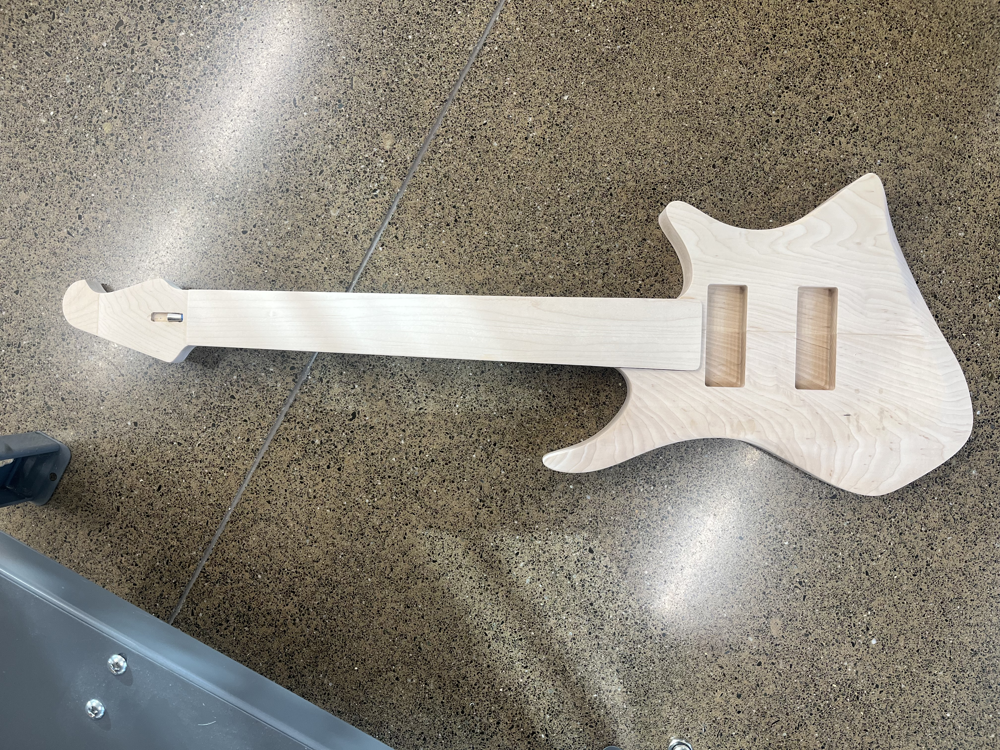
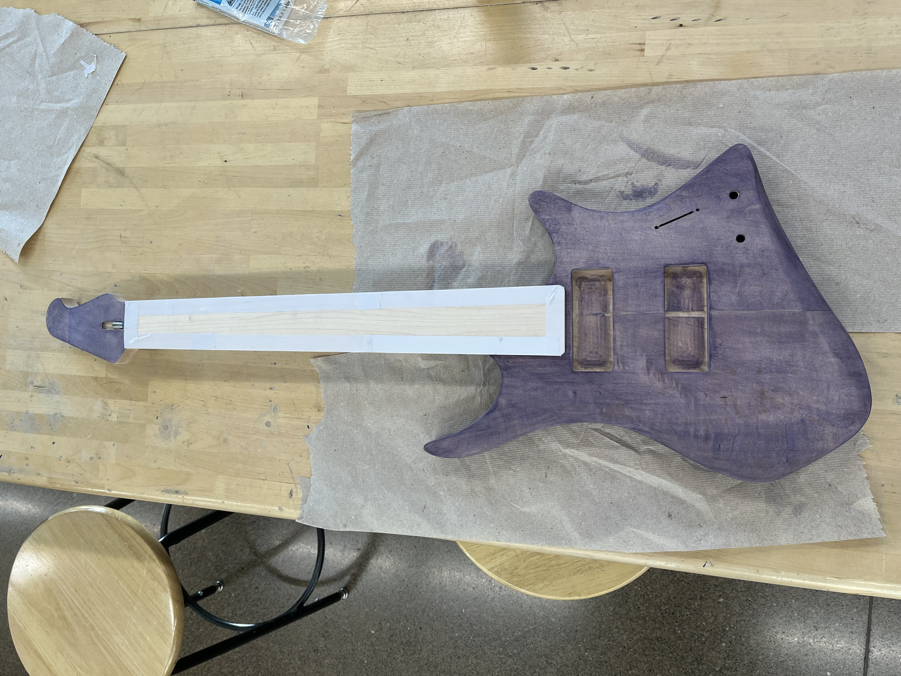
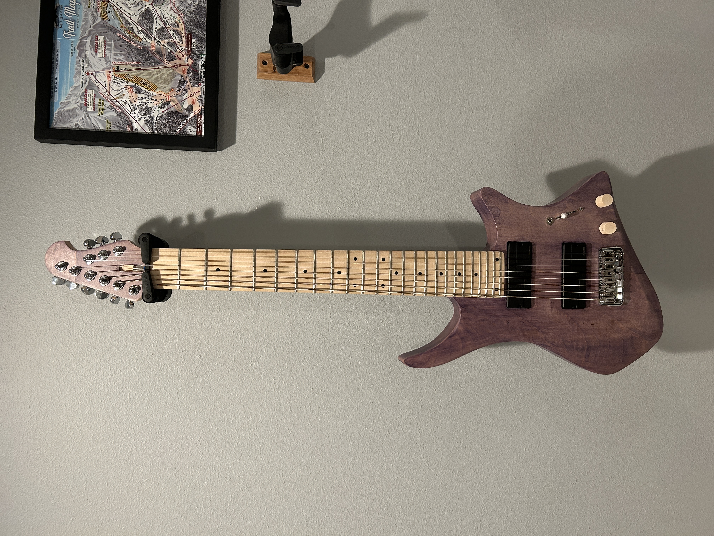

DESIGN / ENGINEERING / MAKING
8-String
Electric Guitar
A fully custom electric guitar designed and manufactured from concept through functional prototype.

THE IDEA
Designing the instrument from the ground up.
This project began as an exploration of what a custom electric guitar could look and feel like when the instrument was designed around both the player and the manufacturing process.
Rather than adapting an existing guitar body, I developed the form, geometry, and construction specifically for an 8-string instrument.

MANUFACTURE
From CAD to chips.
The guitar was modeled in Fusion 360 and translated into CNC toolpaths for machining the body geometry and pockets.
Fixturing, grain direction, stress regions, and structural stability all had to be considered while developing the manufacturing process.


MATERIAL / FINISH
Making the material part of the design.
The finishing process became an important part of the final character of the instrument, bringing out the grain while giving the guitar its distinctive purple-brown appearance.

ENGINEERING / TESTING
A prototype that had to actually work.
Beyond the visual design, the guitar was evaluated for structural stability, tuning, sustain, ergonomics, and electronics integration.
The second iteration incorporated improvements from the first build, resulting in a more refined final product.
RESULT